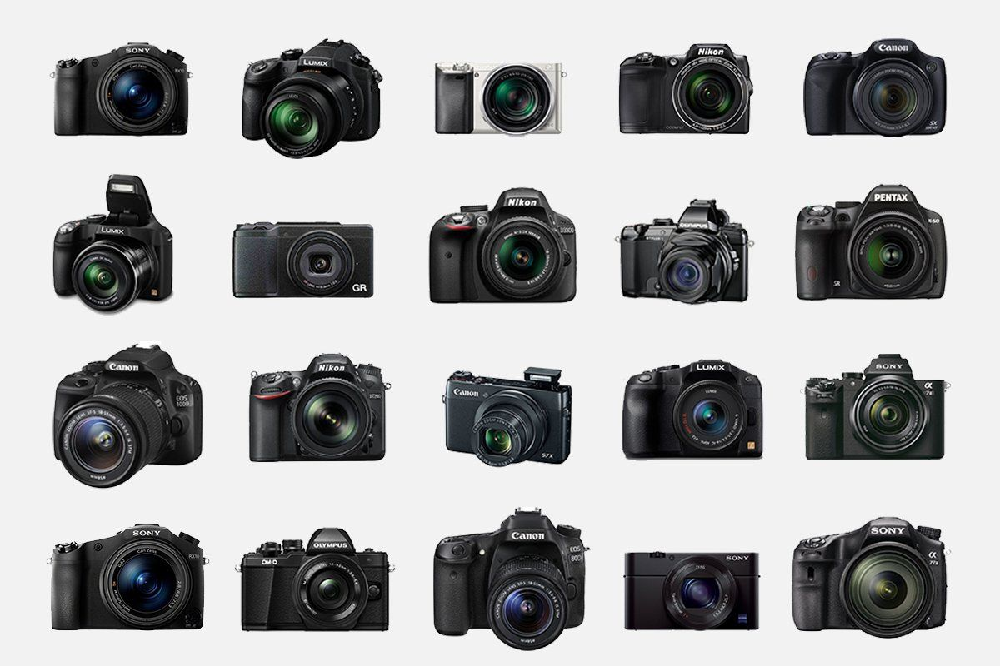
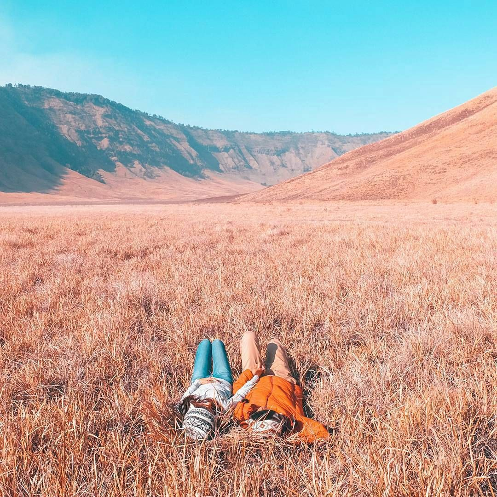

Kami siap membantu anda untuk bepergian

6 Tips Memilih Kamera
Jangan asal membeli kamera apabila tidak memahami apasaja fungsi dan juga pengunaannya. lebih baik melakukan beberapa riset dan membeli secara gati hati....

Tips Solo Traveling
Mau jalan ke museum yang letaknya agak jauh? tentu bisa, kamu tidak perlu khawatir hal ini akan merusak hari teman jaan-jalanmu karena mereka mungkin tidak menyukai museum tersebut....

Tips Liburan Bersama Pasangan
Liburan bersama pasangan memang memiliki tantangan tersendiri dibandingkan liburan seorang diri. bagaimana tidak, kamu dan pasangan akan menghabiskan waktu bersama lebih lama daibandingkan hari-hari biasanya...

Tips Membawa Leptop Saat Liburan
Tidak dapat dipungkiri, disaat liburan, terkadang kita ingin membawa pekerjaan bersama dengan kita. Disatu sisi, sangat perlu untuk membawa laptop dan alat elektronik adalah benda yang cukup rawan...
Pertamakali Naik Pesawat?
Yuk Simak Tipsnya
Naik pesawat sebenarnya sama halnya dengan naik kendaraan umum lainnya. Namun memang ada perbedaan sistem yang menjadikan beberapa orang terkadang merasa bingung setibanya di bandara. Utamanya...
Peralatan Camping Yang Perlu Kamu Miliki
Berkemah adalah salah satu metode menghabiskan waktu akhir pekan yang tak lekang oleh waktu. Apalagijika kamu pergi berkemah dengan keluarga, atau teman sembari ditemani dengan sederet peralatan camping yang sangat membantu...